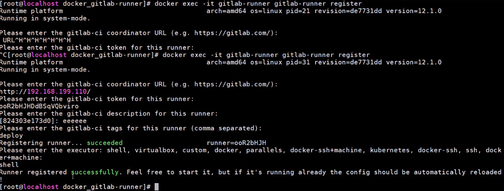
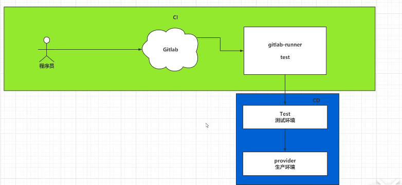
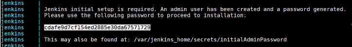

Docker手册
Docker手册一、基本命令1）帮助命令2）docker 镜像命令 1.2.1 查看本地镜像 1.2.2 搜索镜像1.2.3 下载镜像1.2.4 删除镜像3）docker 容器命令 1.3.1 创建并启动容器1.3.2 列出当前容器1.3.3 退出和进入运行中容器1.3.4 停止容器1.3.5 启动和重启容器1.3.6 删除已停止容器1.3.7 查看容器日志1.3.8 查看容器内运行的进程1.3.9 查看容器内部细节1.3.10 进入正在运行的容器并以命令交互1.3.11 从容器内拷贝文件到主机上二、自定义本地镜像2.1） 命令格式2.1.1 将一个tomcat容器发布为本地镜像三、Docker容器数据卷1）做什么3.1.1 数据卷特点2）向容器添加数据卷3.2.1 直接命令添加3.2.2 DockerFile添加四、Dockerfile1）Dockerfile体系结构(保留字指令)2）3步骤3）自定义tomcat案例3.1、编写Dockerfile文件3.2、执行build构建镜像3.3、docker run启动容器五、Docker-Compose1）下载安装2）案例：管理Mysql和Tomcat容器2.1. 首先创建一个外部网络(可跳过)2.2、docker-compose-yml 编辑3）docker-compose命令管理容器4）docker-compose配合Dockerfile5）容器间的网络通信 - Network设置5.1 同宿主机下 容器间如何互相通信5.2 终极问题：不同宿主机下，怎么实现容器间网络通信六、案例1）搭建Maven仓库私服Nexus2）搭建Docker私服 Harbor3）搭建Gitlab仓库七、Docker CI、CD1）部署项目过程的问题2）CI介绍3）实现持续集成3.1、搭建gitlab服务器3.2、GitLab-Runner 4）CICD介绍5）CICD_JenKins5.1 安装Jenkins5.2、配置目标服务器及Gitlab免密码登录5.3 Jenkins配置Gitlab免密码登录5.4 配置jdk和Maven5.5 Jenkins(真实学不动了)
一、基本命令
- win安装docker和docker-compose [教程][https://blog.csdn.net/xiayu204575/article/details/100187557]
1）帮助命令
docker -- help docker versiondocker info2）docker 镜像命令
1.2.1 查看本地镜像
xxxxxxxxxxdocker images [-aq] [--digests] [--no-trunc ] -a # 全部镜像 -q # 只显示镜像ID --digests # 镜像的摘要写信息 --no-trunc # 镜像的完整信息1.2.2 搜索镜像
xxxxxxxxxx## docker search [image name]# eg 搜索不低于3星的python：docker search --filter=stars=3 python1.2.3 下载镜像
xxxxxxxxxx## docker pull [image name]# eg 下载最新python：docker pull python 或 docker pull python:latest 1.2.4 删除镜像
x## dockers rmi [-f] [image id|name]# 删除单个：docker rmi -f 镜像ID# 删除多个：docker rmi -f 镜像名1:tag 镜像名2:tag# 删除全部：docker rmi -f $(docker images -qa)3）docker 容器命令
1.3.1 创建并启动容器
xxxxxxxxxx1.下载镜像docker pull image name 2.启动容器docker run OPTIONS IMAGE COMMAND ARG... [OPTIONS] --name 容器新名字：为容器起的一个名称 -d后台运行容器，并返回容器ID，也即启动守护式容器； -i以交互模式运行容器，通常与-t同时使用；进入docker并返回一个命令终端方便交互 -t为容器重新分配一个伪输入终端， -P：随机端口映射3. 两种启动模式： docker run -it 表示以交互模式启动 docker run -d 表示以后台守护模式启动 eg1run -it 0d120b6ccaa8 centos的imageID=0d120b6ccaa8eg2docker run -it --name mycentos001 centoseg3docker run -d -p 80818080 myweb/tomcat8.51.2 重进tomcat->docker exec -it a49fe28c4109 /bin/bash 操作tomcat部署文件1.3.2 列出当前容器
xxxxxxxxxxdocker ps [OPTIONS] -l 最近容器 -a 当前运行和历史运行的 -n [n] 前n次 -q 静默模式，只显示容器编号 --no-trunc 不截断输出(显示完整containerID)1.3.3 退出和进入运行中容器
1.3.3.1 交互启动模式下--两种：
exit容器内执行，容器停止并退出- 快捷键：
ctrl+P+Q容器不停止退出
1.3.4 停止容器
- 慢慢停止
docker stop [containerID] - 强制停止
docker kill[containerID]
1.3.5 启动和重启容器
docker start [containerID]
docker restart [containerID]
1.3.6 删除已停止容器
xxxxxxxxxxdocker rm [-f] [containerID] # 删除某容器,不加-f只能删已停止的- 一次行删除多个容器:
xxxxxxxxxxdocker rm -f $(docker ps -a -q) # 删除所有容器docker rm -f $(docker ps -a |grep Exited) # 删除不运行的容器docker ps -a -q|xargs docker rm # 同11.3.7 查看容器日志
xxxxxxxxxxdocker logs -f -t --tail [容器ID] -t # 是加入时间戳 -f # 是跟随最新的日志打印 --tail [n] # 显示最后n条1.3.8 查看容器内运行的进程
docker top 容器ID
1.3.9 查看容器内部细节
docker inspect 容器ID
1.3.10 进入正在运行的容器并以命令交互
docker exec -it 容器ID [执行的命令]
xxxxxxxxxxdocker exec -it 容器ID [执行的命令]1. docker exec -it xxx /bin/bash# 跟attach一样进入了容器shell终端2. docker exec -it xxx ls -l /tmp# 直接返回了tmp下的文件列表并退出容器3. docker exec -it a49fe28c4109 /bin/bash 重进tomcat操作部署文件docker attach [容器ID] 直接进入容器启动命令的终端，不产生新的进程
1.3.11 从容器内拷贝文件到主机上
xxxxxxxxxxdocker cp 容器ID:/tmp/a.txt /root# 将容器ID中的a.txt拷贝到本机/root下二、自定义本地镜像
2.1） 命令格式
- 使用docker commit 提交容器的副本使之成为一个新的镜像
- docker commit -m="提交的描述信息" -a="作者" 被复制的容器ID 要创建的目标镜像名:
2.1.1 将一个tomcat容器发布为本地镜像
1.下载tomcat镜像到本地运行
xxxxxxxxxx1. 下载tomcat镜像 docker pull tomcat:8.52. 创建容器并启动 docker run -it -p 8080:8080 tomcat:8.5 2.故意删除上一步镜像的tomcat/webapps下的内容/或放入自己的war包
xxxxxxxxxxdocker exec -it a49fe28c4109 /bin/bash重进tomcat修改部署文件，eg: 上传部署包 webapps/ROOT/xxx.war
3.将它作为新的镜像 myweb/tomcat8.5
xxxxxxxxxxdocker commit -a="ice" -m="myweb" a49fe28c4109 myweb/tomcat8.5:1.2 用容器a49fe28c4109新建一个myweb/tomcat8.5的镜像tag=1.24.新的镜像启动容器
xxxxxxxxxxdocker run -it -p 8081:8080 myweb/tomcat8.5:1.2启动了一个新的tomcat
三、Docker容器数据卷
1）做什么
- 容器的数据持久化
- 容器间继承共享数据
3.1.1 数据卷特点
- 容器之间共享数据
- 卷中的更改可以直接生效
- 数据卷的更改不会包含在镜像的更新中
- 数据卷的生命周期一直持续到没有容器用它为止
2）向容器添加数据卷
3.2.1 直接命令添加
命令：
docker run -v /宿主机绝对目录:/容器内目录 镜像名
命令(带权限)：
docker run -v /宿主机绝对目录:/容器内目录:ro 镜像名
xxxxxxxxxxeg: 1、宿主机D:/work/test/zhuji下的文件与容器/data/volume/container下的文件同步共享： docker run -it -v D:/work/test/zhuji:/data/volume/container centoseg: 2、但容器下权限时readonly操作，增加ro：docker run -it -v D:/work/test/zhuji:/data/volume/container:ro centos3.2.2 DockerFile添加
Dockerfile中使用VOLUME指令来给镜像添加一个或多个数据卷:
xxxxxxxxxxVOLUMN["/dataValume/container1/","/dataValume/container2/","/dataValume/container3/"]

四、Dockerfile
Dockerfile是用来构建Docker镜像的构建文件，是有一系列命令和参数构成的脚本
1）Dockerfile体系结构(保留字指令)
xxxxxxxxxxFROM 基础镜像，当前镜像是基于哪个镜像 FROM scratch # scratch是最基础的镜像MAINTAINER 镜像维护者的姓名和邮箱 MAINTAINER wuxw <928255095@qq.com>RUN 容器构建时需要执行的命令 RUN groupadd redisEXPOSE 当前容器对外暴露的端口号WORKDIR 指定在创建容器后，终端默认登录进来的工作目录， WORKDIR /dataENV 用来在构建镜像过程中设置环境变量 ENV MY_PATH /usr/mypath #声明了/usr/mypath目录的环境变量￥MY_PATHADD 将宿主机目录下的文件拷贝到镜像且ADD命令自动处理URL和解压tar包COPY 类似ADD命令，不解压等操作，将从构建上下文目录<源路径>的文件/目录复制到新的一层镜像的<目标目录>位置 COPY src dest COPY ["src","dest"]VOLUME 容器数据卷，用于数据持久化和容器间共享CMD 指定一个容器启动时要运行的命令 Dockerfile可以有多个CMD，但最后一个为准 CMD会被docker run之后的参数命令替换： Dockerfile中:CMD {"catalina.sh","run"] docker run tomcat:22 ls -l 第一个命令就被ls-l替换执行了，导致tomcat未启动ENTRYPOINT 指定一个容器启动时要运行的命令 与CMD不同的是docker run 后的参数命令不对其替换 Dockerfile配置的:ENTRYPOINT {"catalina.sh","run"] docker run tomcat:1.0 ls -l Dockerfile命令执行完后再执行 ls-lONBUILD 当构建一个被继承的Dockerfile时运行命令，父镜像在被子继承后，父镜像的onbuild被触发2）3步骤
- 创建一个Dockerfile文件，并且指定自定义镜像信息
xxxxxxxxxx # Dockerfile 中常用的内容 from 指定当前自定义镜像依赖的环境 copy 将相对路径下的内容复制到自定义镜像中 workdir 声明镜像的默认工作目录 cmd 需要执行的命令```- 执行docker build 命令，构建一个自定义镜像
xxxxxxxxxx docker build -f /data/web/cloud/docker/Dockerfile -t mycentos:1.1 .<最后的点表示当前目录上下文找Dockerfile>- docker run
xxxxxxxxxx docker run -it mycentos:1.13）自定义tomcat案例
3.1、编写Dockerfile文件
xxxxxxxxxxFROM centosMAINTAINER ice<icesummer_u@qq.com># 把宿主机当前上下文的c.txt拷贝到容器/usr/local/路径下COPY c.txt /usr/local/cincontainer.txt# 把宿主机jdk包tomcat包添加到容器中ADD jdk-8u171-linux-x64.tar.gz /usr/local/ADD apache-tomcat-9.0.8.tar.gz /usr/local/# 安装vim编辑器 RUN yum -y install vim# 设置默认访问的WORKDIR目录，登陆落脚点ENV MYWORKDIR /usr/localWORKDIR $MYWORKDIR# 配置java与tomcat环境变量ENV JAVA_HOME /usr/local/jdk.1.8.0_171ENV CLASSPATH $JAVA_HOME/lib/dt.jar:$JAVA_HOME/lib/tools.jarENV CATALINA_HOME /usr/local/apache-tomcat-9.0.8ENV CATALINA_BASE /usr/local/apache-tomcat-9.0.8ENV PATH $PATH:$JAVA_HOME/bin:$CATALINA_HOME/lib:$CATALINA_HOME/bin# 容器运行时监听的端口EXPOSE 8080# 启动时运行tomcat# ENTRYPOINT ["$CATALINA_BASE/bin/startup.sh"]# CMD ["$CATALINA_BASE/bin/catalina.sh","run"]CMD $CATALINA_HOME/bin/startup.sh && tail -F $CATALINA_HOME/bin/logs/catalina.out3.2、执行build构建镜像
xxxxxxxxxx docker build -t mytomcat93.3、docker run启动容器
xxxxxxxxxxdocker run -d -p 9090:8080 --name myweb -v /data/docker/tomcat9/myweb:/usr/local/apache-tomcat-9.0.8/webapps/myweb -v /data/docker/tomcat9/logs:/usr/local/apache...9.0.8/logs --privileged=true mytomcat9五、Docker-Compose
优点
- 方便配置参数；
- 批量管理容器；
1）下载安装
xxxxxxxxxx1、[下载地址][https://github.com/docker/compose] docker-compose-Linux-x86_642、传至linux，/data/installs/docker-compose/ 修改名称为docker-compose• chmod 755 docker-compose3、增加配置环境变量vim /etc/profileexport $PATH:/data/installs/docker-composesource /etc/profile2）案例：管理Mysql和Tomcat容器
常规方法：安装mysql5.7
xxxxxxxxxxdocker run -p 3306:3306 --name mysql-57 - v /my/mysql/data:/var/lib/mysql -e MYSQL_ROOT_PASSWORD=xxx -d centos/mysql-57-centos7---------------v /mydata/mysql/conf:/etc/mysql # 将配置文件夹挂在到主机-v /mydata/mysql/log:/var/log/mysql # 将日志文件夹挂载到主机-v /mydata/mysql/data:/var/lib/mysql # 将配置文件夹挂载到主机----mysql/mysql-server安装mariadb（docker pull mariadb）
xxxxxxxxxxdocker run -v /my/mariadb/:/var/lib/mariadb -p 3309:3309 -e MYSQL_ROOT_PASSWORD=xxx --privileged=true --restart unless-stopped --name mariadbs -d mariadb:latest2.1. 首先创建一个外部网络(可跳过)
- 此步可略过，docker-compose在up启动时会自动创建默认的
xxxxxxxxxx# 在docker-compose.yml所在目录 docker network create myout-network # 创建外部网络 # 统一使用该网络容器间可以用服务名代替ip访问docker network list # 查看已存在的网络2.2、docker-compose-yml 编辑
xxxxxxxxxxversion'3.7'services mysqldb# 服务的名称 restartalways # 总是随容器启动；unless-stopped:当正常退出时，下次不在随docker启动，其它同always imagemysql # 镜像的位置 container_namemysqldb # 容器的名称 ports# 映射容器端口8817:3306 environment MYSQL_ROOT_PASSWORD'roto-123456' TZ'Asia/Shanghai' # 时区 command --default-authentication-plugin=mysql_native_password --character-set-server=utf8mb4 --collation-server=utf8mb4_general_ci --explicit_defaults_for_timestamp=true --lower_case_table_names=1 volumes/data/web/cloud/docker/mysql/data:/var/lib/mysql #映射数据卷 #- /data/web/cloud/docker/mysql/conf:/etc/mysql/conf.d #- /data/web/cloud/docker/mysql/logs:/logs networksdefaultmyout-network tocmat# 服务的名称 restartalways # 总是随容器启动 imagedordoka/tomcat # 镜像的位置 container_nametomcat8 # 容器的名称 ports# 映射容器端口8816:8080 environment TZAsia/Shanghai volumes/data/web/cloud/docker/tc8/webapps:/opt/tomcat/webapps/data/web/cloud/docker/tc8/logs:/opt/tomcat/logs networksdefaultnetworks myout-network externaltrue # 使用外部网络true2. 后台启动
xxxxxxxxxxdocker-compose up -d # -d后台启动
3）docker-compose命令管理容器
使用docker-compose时，默认会在当前命令下找docker-compose.yml文件
xxxxxxxxxx#1. 基于docker-compose.yml启动管理容器docker-compose up -d # -d后台启动#2. 关闭并删除容器docker-compose down#3. 开启或关闭已经存在的由docker-compose维护的容器docker-compose start|stop|restart [xx]#4. 查看由docker-compose维护的容器docker-compose ps#5. 查看日志docker-compose logs -f #6. 重新构建自定义镜像docker-compose build4）docker-compose配合Dockerfile
使用docker-compose.yml文件和Dockerfile在生成自定义镜像的同时启动当前镜像，并且由docker-compose去管理容器
xxxxxxxxxx# yml文件version'3.7'services ssm restartalways # 总是随容器启动 build# 构建自定义镜像 context. # 指定Dockerfile所在路径 dockerfileDockerfile # 指定Dockerfile的文件名称 imagesms1.0.1 # 来自Dockerfile的镜像命名 container_namessm ports80818080 environment TZAsia/Shanghaixxxxxxxxxx#Dockerfile:from dordoka/tomcatcopy ssm.war /opt/tomcat/webapps # 将本地war包发布到容器中xxxxxxxxxx# 可以直接启动基于docker-compose.yml和Dockerfile构建的自定义镜像docker-compose up -d# 可以重新构建自定义镜像 docker-compose build# 运行前，重新构建docker-compose up -d --build5）容器间的网络通信 - Network设置
5.1 同宿主机下 容器间如何互相通信
- 默认compose会为每个容器创建一个默认网络便于容器和宿主的通信(名称：{project_name}_default)，相当于式不同的局域网
- 容器间无法直接通信(只能把端口通过暴露到宿主机，然后通过宿主ip+外端口访问)
- 解决：不同容器统一使用相同的外部局域网实现容器间的通信；
- 需求：1. Mysql处于安全考虑不开放端口，2. Mysql也不支持Tomcat直接用IP形式的连接
解方： 1、先创建外部网络，在不同容器中都使用该网络； 2、docker-compose都统一使用该网络 3、tomcat程序的数据库连接IP使用容器服务名代替：
xxxxxxxxxx# 1. 创建一个外部局域网docker network create myout-network # 创建外部网络 # 统一使用该网络容器间可以用服务名代替ip访问docker network list # 查看已存在的网络 # 2. mysql 不expose端口 的docker-compose.ymlversion'3.7'services mysql_db imagemysql restartalways container_name'mysql_db' # ports: 屏蔽掉暴露端口 environment MYSQL_ROOT_PASSWORD'roto-123456' TZ'Asia/Shanghai' # 时区 command --default-authentication-plugin=mysql_native_password --character-set-server=utf8mb4 --collation-server=utf8mb4_general_ci --explicit_defaults_for_timestamp=true --lower_case_table_names=1 volumes/data/web/cloud/docker/mysql/data:/var/lib/mysql #映射数据卷networks default# 默认网络 external# 外部网络 namemyout-network # 把该局域网声明为默认网络# 3. ssm的程序使用该局域网 docker-compose.yml:version'3.7'services ssm networksmyout-network # 下方声明的网络非默认,需要显式配置 volumes./webapps:/opt/tomcat/webapps./logs:/opt/tomcat/logs ... # 其它配置networks myout-network externaltrue # 生命使用该网络作为外部网络 # 4. 修改ssm连接数据库的 ## application-db.yml: # 使用服务名mysql_db代替IP jdbc:mysql://mysql_db:3306/myshop?useUnicode=true&...# 5. 启动 docker-compose up -d5.2 终极问题：不同宿主机下，怎么实现容器间网络通信
- 使用K8s解决
六、案例
1）搭建Maven仓库私服Nexus
xxxxxxxxxxversion'3.7'services nexus image'sonatype/nexus3' container_name'nexus' ports8081:8081 volumes./data:/nexus-data# 给./data赋予读写权限# 登录http://ip:port/nexus # 默认账户admin,密码在/nexus-data/admin.password on the server.# Pom配置私服地址：## 1.配置代理仓库：<repositories> 详略## 2. 配置代理仓库插件 <pluginRepositories> 祥略## 如上就可以从私服拉取依赖，（过程：pom文件先从私服仓库下载，如果没有再仓中央仓库拉取）### 执行命令 mvn clean package -Dmaven.test.skip=true即可拉取依赖# 发布jar到私服## 1. 在本地maven的settings中配置Server节点(发行版和快照版)<server><id>nexus=releases</id><username>admin</username><password><admin123</password></server><server><id>nexus-snapshots</id><username>admin</username><password><admin123</password></server>## 2. 在项目pom中配置<distributionManagment><repository><id>nexus-release</id><name>x</name><url>http://ip:8081/repository/maven-release/</url></repository><snapshotRepository><id>nexus-snapshots</id><name>x</name><url>http://ip:8081/repository/maven-release/</url></snapshotRepository># 执行命令： mvn deploy -Dmaven.test.skip=true # (install and upload)# 手动上传第三方依赖(Nexus3.1+支持) 或者pom下执行如下：# 如第三方jar包 aliyun-sdk-oss-2.2.3.jarmvn deploy:deploy-file -DgroupId=com.aliyun.oss -DartifactId=aliyun-sdk-oss -Dversion=2.2.3 -Dpackaging=jar -Dfile=D:\jar\aliyun-sdk-oss-2.2.3.jar -Drepository=nexus-releases
2）搭建Docker私服 Harbor
搭建企业级私有Register服务器 Harbor支持微服务架构 适合CI/CD持续集成开发模式(代理，同步，多服务)
1）安装
- 官网 下载 offline 安装Wiki说明安装

2）配置客户端
在/etc/docker/daemon.json中配置仓库地址
xxxxxxxxxx{ "registry-mirrors":["https:///"] "inseccure-registries":["myharbor仓库地址"]}
- 上传本地镜像到私服
- 标记镜像为新的镜像：docker tag nginx:latest 192.168.xx/myshop/nginx:latest
- 登录Harbor：docker login 192.168.xx -u admin -p harborPwd
- 推送镜像到Harbor： docker push 192.168.xx/myshop/nginx:latest # tagname
- 从私服下载：docker pull tagname
3）搭建Gitlab仓库
跳转至 @【七.3 实现持续继承】
七、Docker CI、CD
实现docker自动化部署项目，一次构建到处执行
1）部署项目过程的问题
xxxxxxxxxx# 发布过程：1. 将项目通过maven进行编译打包2. 将文件传到指定的服务中3. 将war包放到tomcat中4. 通过Dockerfile和tomcat和war包转成一个镜像，由docker-compose运行容器# 项目更新： 将上述步骤再来一遍？缺点：重复，频繁更新耗时解决：CI持续集成，只要修改就2）CI介绍
CI(continuous intergration) 持续集成
持续集成：编写代码时，完成了一个功能后，立即提交代码到git仓库，CI自动将项目重新构建；
- 快速发现错误
- 防止代码偏离主分支
3）实现持续集成
3.1、搭建gitlab服务器
创建一个虚拟机，并至少指定4G的运行内存
安装docker以及docker-compose
将ssh的默认22端口修改为60022
xxxxxxxxxx# 修改ssh连接端口vim /etc/ssh/sshd_config# Port 22 -> Port 60022systemctl restart sshd# 安装Ruby环境(gitlab是Ruby on Rains写的)# 官方镜像 store/gitlab/gitlab-ce:11.10.4-ce.0# 中文镜像 twang2218/gitlab-ce-zh:11.1.4'# https://hub.docker.com/r/twang2218/gitlab-ce-zh使用docker-compose.yml文件安装gitlab
xxxxxxxxxx# cd /data/web/docker_gitlab# mkdir /data/web/docker_gitlab# vim docker-composeversion'3.7'services gitlab images'twang2218/gitlab-ce-zh:11.1.4' container_name'gitlab' restartalways privilegedtrue hostname'gitlab' environment TZ'Asia/Shanghai' GITLAB_OMNIBUS_CONFIG external_url: 'http://192.168.199.110' # 访问地址 gitlab_rails['time_zone']='Asia/Shanghai' gitlab_rails['smtp_enable']=true gitlab_rails['gitlab_shell_ssh_port']=60022 gitlab_rails['listen_port']=80 ports'80:80''443:443''60022:22' volumes./config:/etc/gitlab./data:/var/opt/gitlab./logs:/var/log/gitlabxxxxxxxxxx# docker-compose 启动docker-compose up -d && docker-compose logs -f # 访问gitlab# http://192.168.199.110:80# 并设置密码并登录：root/设置的密码# 登录并创建一个testci工程
客户端使用ssh拉取和推送 (代替 http账号密码方式拉取, ) -- why: (免密) 不会阻塞，后续CI/CI需要
- 生成ssh key（在git安装目录D:\program\Git\usr\bin 输入命令: ssh-keygen -t rsa -C "youremail@examle.com"）
- 生成密钥文 C:\users/xxx/.ssh\id_rsa ，将id_rsa.pub内容复制到gitlab的用户-设置-SSH中
- 即可使用ssh协议拉取推送代码
3.2、GitLab-Runner



^[上述过程将runner与gitlab的testci工程结合了起来]
- 测试
创建maven工程，添加web.xml文件，编写html
编写gitlab-ci.yml文件（在工程目录）
xxxxxxxxxxstages:- testtest:statge: testscript:- echo first test ci # 输入的命令- /usr/local/maven/apache-maven-3.6.3/bin/mvn package将maven工程推送到gitlab中testci
可以再gitlab看到gitlab-cli.yml的内容

4）CICD介绍
CI --> 开发人员------> 提交到gitlab------->gitlab-runner自动部署到测试环境 >-->[称之为(持续集成)]
CD --> 将开发环境CI到-- > 测试环境---->生产环境
xxxxxxxxxx* 持续交付：将代码交付给专业的测试团队去测试* 持续部署：将测试通过的代码，发布到生产环境

5）CICD_JenKins
[教学视频][https://www.bilibili.com/video/BV1sK4y1s7Cj?p=24]
5.1 安装Jenkins
官网：genkins.io/zh/ doc： https://www.jenkins.io/zh/doc/book/installing/
推荐配置： * 1GB+可用内存 * 50GB+可用磁盘空间
xxxxxxxxxx# linux：docker pull jenkinsci/blueoceandocker run \-u root \--rm \ # （可选） jenkinsci/blueocean 关闭时自动删除Docker容器（下图为实例）。如果您需要退出Jenkins，这可以保持整洁。--name jenkins-blueocean \-d \-p 8080:8080 \-p 50000:50000 \-v jenkins-data:/var/jenkins_home \-v /var/run/docker.sock:/var/run/docker.sock \jenkinsci/blueoceanxxxxxxxxxx# windows：docker run -u root --rm --name jenkins -d -p 8080:8080 -p 50000:50000 -v jenkins-data:/var/jenkins_home -v /var/run/docker.sock:/var/run/docker.sock jenkinsxxxxxxxxxx# mkdir jenkins_home# chmod 755 jenkins_home/*# cd jenkins_homeversion'3.7'servicesjenkinsimagesjenkinsci/blueoceanrestartalwayscontainer_namejenkinsports888880805000050000volumes./data:/var/jenkins_home# docker-compose up -d & docker-compose logs# 第一次运行./data目录没有权限，导致失败：[chmod 755 ./data -- > docker-compose restart]# 访问： 127.0.0.1:8888# * 输入密码<在logs日志中有初始密码># 登陆后安装插件git，publish
5.2、配置目标服务器及Gitlab免密码登录
Gitlab -> Jenkins -> 目标服务器
xxxxxxxxxx1. Jenkins去连接目标服务器打开gitlab网址[http:///:8888/manage] ->Manage Jenkins->Configure System-> Publish over SSH ->add SSH Server-> * name: jenkins-193.15555 * hostname: 193.155x?? username:root Remote Dir:/usr/xxx2.

5.3 Jenkins配置Gitlab免密码登录
xxxxxxxxxx1. 登录Jenkins容器内部2. 输入生成SSH密钥的命令3. 复制到gitlab的ssh中

上个目录对应该主机数据卷地址：./data/下的.ssh 可以拿到密钥
xxxxxxxxxxcd .ssh ;cat id_rsa.pub 复制到gitlab网页中的settings->ssh密钥
5.4 配置jdk和Maven
xxxxxxxxxx1. 复制本地jdk和maven的压缩包到jenkins-data目录 ,手动解压2. 在jenkins监控页面配置jdk和maven<位置：settings->Manage Jenkins ->Global Tool Configuration ->1.Add Jdk(JAVA_HOME);2.Add Maven(MAVEN_HOME)
5.5 Jenkins(真实学不动了)
八、其它
END